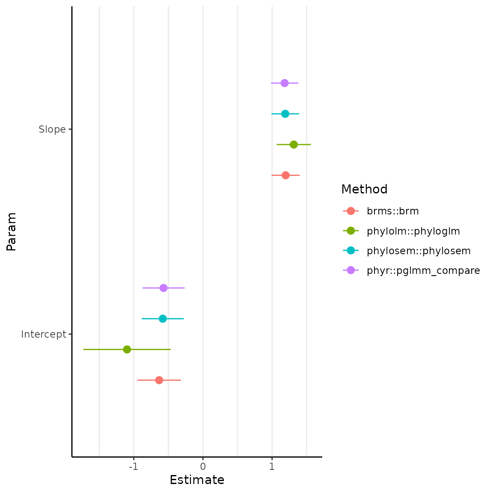
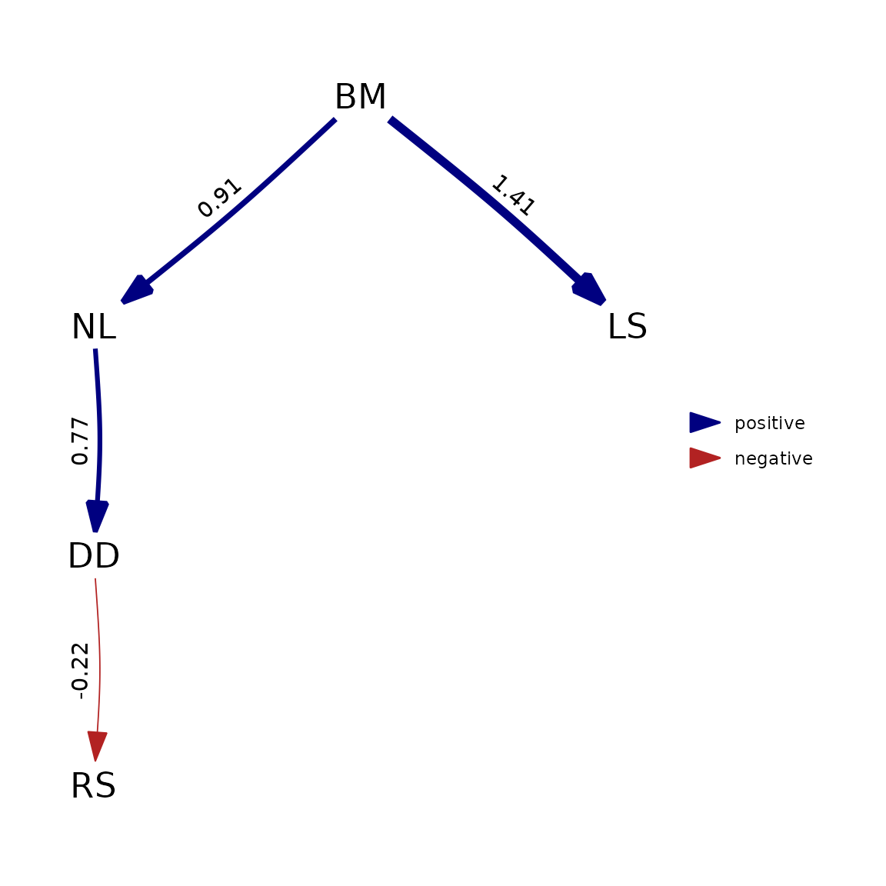
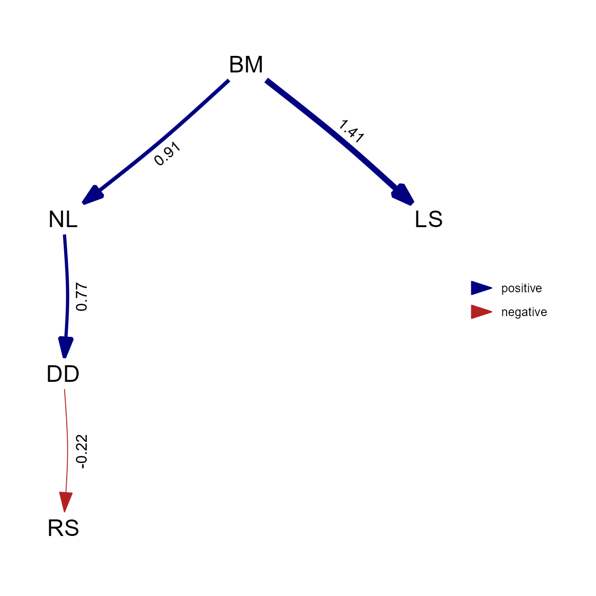

Comparison with other packages
James T. Thorson and Wouter van der Bijl
Source:vignettes/comparison.Rmd
comparison.Rmdphylosem is an R package for fitting phylogenetic
structural equation models (PSEMs). The package generalizes features in
existing R packages:
-
semfor structural equation models (SEMs); -
phylosemfor comparison among alternative path models; -
phylolmfor fitting large linear models that arise as when specifying a SEM with one endogenous variable and multiple exogenous and independent variables; -
Rphyloparsfor interpolating missing values when specifying a SEM with an unstructured (full rank) covariance among variables;
In model configurations that can be fitted by both
phylosem and these other packages, we have confirmed that
results are nearly identical or otherwise identified reasons that
results differ.
phylosem involves a simple user-interface that specifies
the SEM using notation from package sem and the
phylogenetic tree using package ape. It allows uers to
specify common models for the covariance including:
- Brownian motion (BM);
- Ornstein-Uhlenbeck (OU);
- Pagel’s lambda;
- Pagel’s kappa;
Output can be coerced to standard formats so that
phylosem can use plotting and summary functions form other
packages. Available output formats include:
-
sem, for plotting the estimated SEM and summarizing direct and indirect effects; -
phylopath, for plotting and model comparison; -
phylo4din R-packagephylobasefor plotting estimated traits;
Below, we specifically highlight the syntax, runtime, and output
resulting from phylosem and other packages.
Comparison with phylolm
We first compare syntax and run-times using simulated data against
phylolm. This confirms that runtimes from
phylosem are within an order of magnitude and that results
are nearly identical for BM, OU, delta, and kappa models.
# Settings
Ntree = 100
sd_x = 0.3
sd_y = 0.3
b0_x = 1
b0_y = 0
b_xy = 1
# Simulate tree
set.seed(1)
tree = ape::rtree(n=Ntree)
# Simulate data
x = b0_x + sd_x * phylolm::rTrait(n = 1, phy=tree)
ybar = b0_y + b_xy*x
y_normal = ybar + sd_y * phylolm::rTrait(n = 1, phy=tree)
# Construct, re-order, and reduce data
Data = data.frame(x=x,y=y_normal)[]
# Compare using BM model
start_time = Sys.time()
plm_bm = phylolm::phylolm(y ~ 1 + x, data=Data, phy=tree, model="BM" )
Sys.time() - start_time
#> Time difference of 0.006439447 secs
knitr::kable(summary(plm_bm)$coefficients, digits=3)| Estimate | StdErr | t.value | p.value | |
|---|---|---|---|---|
| (Intercept) | -0.371 | 0.214 | -1.734 | 0.086 |
| x | 1.117 | 0.101 | 11.053 | 0.000 |
start_time = Sys.time()
psem_bm = phylosem( sem = "x -> y, p",
data = Data,
tree = tree,
control = phylosem_control(quiet = TRUE) )
Sys.time() - start_time
#> Time difference of 0.196418 secs
knitr::kable(summary(psem_bm)$coefficients, digits=3)| Path | VarName | Estimate | StdErr | t.value | p.value |
|---|---|---|---|---|---|
| NA | Intercept_x | 1.087 | 0.183 | 5.945 | 0.000 |
| NA | Intercept_y | -0.371 | 0.213 | 1.743 | 0.081 |
| x -> y | p | 1.117 | 0.101 | 11.109 | 0.000 |
| x <-> x | V[x] | 0.315 | 0.022 | 14.072 | 0.000 |
| y <-> y | V[y] | 0.315 | 0.022 | 14.072 | 0.000 |
# Compare using OU
start_time = Sys.time()
plm_ou = phylolm::phylolm(y ~ 1 + x, data=Data, phy=tree, model="OUrandomRoot" )
Sys.time() - start_time
#> Time difference of 0.02001715 secs
start_time = Sys.time()
psem_ou = phylosem( sem = "x -> y, p",
data = Data,
tree = tree,
estimate_ou = TRUE,
control = phylosem_control(quiet = TRUE) )
Sys.time() - start_time
#> Time difference of 0.2204044 secs
knitr::kable(summary(psem_ou)$coefficients, digits=3)| Path | VarName | Estimate | StdErr | t.value | p.value |
|---|---|---|---|---|---|
| NA | Intercept_x | 1.028 | 0.208 | 4.946 | 0.000 |
| NA | Intercept_y | -0.274 | 0.235 | 1.165 | 0.244 |
| x -> y | p | 1.099 | 0.101 | 10.887 | 0.000 |
| x <-> x | V[x] | 0.332 | 0.026 | 12.712 | 0.000 |
| y <-> y | V[y] | 0.332 | 0.026 | 12.860 | 0.000 |
| Estimate | StdErr | t.value | p.value | |
|---|---|---|---|---|
| (Intercept) | -0.781 | 0.389 | -2.006 | 0.048 |
| x | 1.095 | 0.101 | 10.850 | 0.000 |
knitr::kable(c( "phylolm_alpha"=plm_ou$optpar,
"phylosem_alpha"=exp(psem_ou$parhat$lnalpha) ), digits=3)| x | |
|---|---|
| phylolm_alpha | 0.120 |
| phylosem_alpha | 0.105 |
# Compare using Pagel's lambda
start_time = Sys.time()
plm_lambda = phylolm::phylolm(y ~ 1 + x, data=Data, phy=tree, model="lambda" )
Sys.time() - start_time
#> Time difference of 0.0403533 secs
start_time = Sys.time()
psem_lambda = phylosem( sem = "x -> y, p",
data = Data,
tree = tree,
estimate_lambda = TRUE,
control = phylosem_control(quiet = TRUE) )
Sys.time() - start_time
#> Time difference of 0.1862426 secs
knitr::kable(summary(psem_lambda)$coefficients, digits=3)| Path | VarName | Estimate | StdErr | t.value | p.value |
|---|---|---|---|---|---|
| NA | Intercept_x | 1.092 | 0.162 | 6.740 | 0.000 |
| NA | Intercept_y | -0.346 | 0.200 | 1.726 | 0.084 |
| x -> y | p | 1.092 | 0.103 | 10.559 | 0.000 |
| x <-> x | V[x] | 0.284 | 0.025 | 11.367 | 0.000 |
| y <-> y | V[y] | 0.290 | 0.024 | 11.897 | 0.000 |
| Estimate | StdErr | t.value | p.value | |
|---|---|---|---|---|
| (Intercept) | -0.356 | 0.207 | -1.718 | 0.089 |
| x | 1.102 | 0.103 | 10.744 | 0.000 |
knitr::kable(c( "phylolm_lambda"=plm_lambda$optpar,
"phylosem_lambda"=plogis(psem_lambda$parhat$logitlambda) ), digits=3)| x | |
|---|---|
| phylolm_lambda | 0.980 |
| phylosem_lambda | 0.957 |
# Compare using Pagel's kappa
start_time = Sys.time()
plm_kappa = phylolm::phylolm(y ~ 1 + x, data=Data, phy=tree, model="kappa", lower.bound = 0, upper.bound = 3 )
Sys.time() - start_time
#> Time difference of 0.01028705 secs
start_time = Sys.time()
psem_kappa = phylosem( sem = "x -> y, p",
data = Data,
tree = tree,
estimate_kappa = TRUE,
control = phylosem_control(quiet = TRUE) )
Sys.time() - start_time
#> Time difference of 0.1678932 secs
knitr::kable(summary(psem_kappa)$coefficients, digits=3)| Path | VarName | Estimate | StdErr | t.value | p.value |
|---|---|---|---|---|---|
| NA | Intercept_x | 1.078 | 0.186 | 5.783 | 0.000 |
| NA | Intercept_y | -0.368 | 0.216 | 1.705 | 0.088 |
| x -> y | p | 1.113 | 0.101 | 11.025 | 0.000 |
| x <-> x | V[x] | 0.299 | 0.029 | 10.183 | 0.000 |
| y <-> y | V[y] | 0.300 | 0.029 | 10.343 | 0.000 |
| Estimate | StdErr | t.value | p.value | |
|---|---|---|---|---|
| (Intercept) | -0.370 | 0.216 | -1.716 | 0.089 |
| x | 1.115 | 0.101 | 11.015 | 0.000 |
knitr::kable(c( "phylolm_kappa"=plm_kappa$optpar,
"phylosem_kappa"=exp(psem_kappa$parhat$lnkappa) ), digits=3)| x | |
|---|---|
| phylolm_kappa | 0.930 |
| phylosem_kappa | 0.857 |
Generalized linear models
We also compare results among software for fitting phylogenetic generalized linear models (PGLM).
Poisson-distributed response
First, we specifically explore a Poisson-distributed PGLM, comparing
phylosem against phylolm::phyloglm (which uses
Generalized Estimating Equations) and phyr::pglmm_compare
(which uses maximum likelihood).
# Settings
Ntree = 100
sd_x = 0.3
sd_y = 0.3
b0_x = 1
b0_y = 0
b_xy = 1
# Simulate tree
set.seed(1)
tree = ape::rtree(n=Ntree)
# Simulate data
x = b0_x + sd_x * phylolm::rTrait(n = 1, phy=tree)
ybar = b0_y + b_xy*x
y_normal = ybar + sd_y * phylolm::rTrait(n = 1, phy=tree)
y_pois = rpois( n=Ntree, lambda=exp(y_normal) )
# Construct, re-order, and reduce data
Data = data.frame(x=x,y=y_pois)
# Compare using phylolm::phyloglm
pglm = phylolm::phyloglm(y ~ 1 + x, data=Data, phy=tree, method="poisson_GEE" )
knitr::kable(summary(pglm)$coefficients, digits=3)| Estimate | StdErr | z.value | p.value | |
|---|---|---|---|---|
| (Intercept) | -1.098 | 0.633 | -1.736 | 0.083 |
| x | 1.314 | 0.247 | 5.320 | 0.000 |
#
pglmm = phyr::pglmm_compare(
y ~ 1 + x,
family = "poisson",
data = Data,
phy = tree )
knitr::kable(summary(pglmm), digits=3)
#> Generalized linear mixed model for poisson data fit by restricted maximum likelihood
#>
#> Call:y ~ 1 + x
#>
#> logLik AIC BIC
#> -173.4 354.7 360.6
#>
#> Phylogenetic random effects variance (s2):
#> Variance Std.Dev
#> s2 0.05511 0.2348
#>
#> Fixed effects:
#> Value Std.Error Zscore Pvalue
#> (Intercept) -0.57009 0.30469 -1.8710 0.06134 .
#> x 1.18137 0.19807 5.9645 2.454e-09 ***
#> ---
#> Signif. codes: 0 '***' 0.001 '**' 0.01 '*' 0.05 '.' 0.1 ' ' 1
#
pgsem = phylosem( sem = "x -> y, p",
data = Data,
family = c("fixed","poisson"),
tree = tree,
control = phylosem_control(quiet = TRUE) )
knitr::kable(summary(pgsem)$coefficients, digits=3)| Path | VarName | Estimate | StdErr | t.value | p.value |
|---|---|---|---|---|---|
| NA | Intercept_x | 1.087 | 0.183 | 5.945 | 0.000 |
| NA | Intercept_y | -0.581 | 0.305 | 1.904 | 0.057 |
| x -> y | p | 1.190 | 0.199 | 5.971 | 0.000 |
| x <-> x | V[x] | 0.315 | 0.022 | 14.072 | 0.000 |
| y <-> y | V[y] | 0.232 | 0.054 | 4.310 | 0.000 |
We also compare results against brms (which fits a
Bayesian hierarchical model), although we load results from compiled run
of brms to avoid users having to install STAN to run
vignettes for phylosem:
# Comare using Bayesian implementation in brms
library(brms)
Amat <- ape::vcv.phylo(tree)
Data$tips <- rownames(Data)
mcmc <- brm(
y ~ 1 + x + (1 | gr(tips, cov = A)),
data = Data, data2 = list(A = Amat),
family = 'poisson',
cores = 4
)
knitr::kable(fixef(mcmc), digits = 3)
# Plot them together
library(ggplot2)
pdat <- rbind.data.frame(
coef(summary(pglm))[, 1:2],
data.frame(Estimate = pglmm$B, StdErr = pglmm$B.se),
setNames(as.data.frame(fixef(mcmc))[1:2], c('Estimate', 'StdErr')),
setNames(summary(pgsem)$coefficients[2:3, 3:4], c('Estimate', 'StdErr'))
)
pdat$Param <- rep(c('Intercept', 'Slope'), 4)
pdat$Method <- rep( c('phylolm::phyloglm', 'phyr::pglmm_compare',
'brms::brm', 'phylosem::phylosem'), each = 2)
figure = ggplot(pdat, aes(
x = Estimate, xmin = Estimate - StdErr,
xmax = Estimate + StdErr, y = Param, color = Method
)) +
geom_pointrange(position = position_dodge(width = 0.6)) +
theme_classic() +
theme(panel.grid.major.x = element_line(), panel.grid.minor.x = element_line())
In this instance (and in others we have explored), results from
phylolm::phyloglm are generally different while those from
phylosem, phyr::pglmm_compare, and
brms are close but not quite identical.
Binomial regression
We also compare results for a Bernoulli-distributed response using
PGLM. We again compare phylosem against
phyr::pglmm_compare, and do not explore threshold models
which we expect to give different results due differences in assumptions
about how latent variables affect measurements.
# Settings
Ntree = 100
sd_x = 0.3
sd_y = 0.3
b0_x = 1
b0_y = 0
b_xy = 1
# Simulate tree
set.seed(1)
tree = ape::rtree(n=Ntree)
# Simulate data
x = b0_x + sd_x * phylolm::rTrait(n = 1, phy=tree)
ybar = b0_y + b_xy*x
y_normal = ybar + sd_y * phylolm::rTrait(n = 1, phy=tree)
y_binom = rbinom( n=Ntree, size=1, prob=plogis(y_normal) )
# Construct, re-order, and reduce data
Data = data.frame(x=x,y=y_binom)
#
pglmm = phyr::pglmm_compare(
y ~ 1 + x,
family = "binomial",
data = Data,
phy = tree )
knitr::kable(summary(pglmm), digits=3)
#> Generalized linear mixed model for binomial data fit by restricted maximum likelihood
#>
#> Call:y ~ 1 + x
#>
#> logLik AIC BIC
#> -63.74 135.47 141.32
#>
#> Phylogenetic random effects variance (s2):
#> Variance Std.Dev
#> s2 0.1076 0.328
#>
#> Fixed effects:
#> Value Std.Error Zscore Pvalue
#> (Intercept) 0.23179 0.60507 0.3831 0.7017
#> x 0.44548 0.45708 0.9746 0.3297
#
pgsem = phylosem( sem = "x -> y, p",
data = Data,
family = c("fixed","binomial"),
tree = tree,
control = phylosem_control(quiet = TRUE) )
knitr::kable(summary(pgsem)$coefficients, digits=3)| Path | VarName | Estimate | StdErr | t.value | p.value |
|---|---|---|---|---|---|
| NA | Intercept_x | 1.087 | 0.183 | 5.945 | 0.000 |
| NA | Intercept_y | 0.204 | 0.589 | 0.346 | 0.730 |
| x -> y | p | 0.458 | 0.468 | 0.977 | 0.328 |
| x <-> x | V[x] | -0.315 | 0.022 | 14.072 | 0.000 |
| y <-> y | V[y] | 0.290 | 0.284 | 1.020 | 0.308 |
In this instance, phylosem and
phyr::pglmm_compare give similar estimates and standard
errors for the slope term.
Summary of PGLM results
Based on these two comparisons, we conclude that phylosem provides an interface for maximum-likelihood estimate of phylogenetic generalized linear models (PGLM), and extends this class to include mixed data (i.e., a combination of different measurement types), missing data, and non-recursive structural linkages. However, we also encourage further cross-testing of different software for fitting phylogenetic generalized linear models.
Compare with phylopath
We next compare with a single run of phylopath. This
again confirms that runtimes are within an order of magnitude and
results are identical for standardized or unstandardized
coefficients.
library(phylopath)
library(phylosem)
# make copy of data that's rescaled
rhino_scaled = rhino
rhino_scaled[,c("BM","NL","LS","DD","RS")] = scale(rhino_scaled[,c("BM","NL","LS","DD","RS")])
# Fit and plot using phylopath
dag <- DAG(RS ~ DD, LS ~ BM, NL ~ BM, DD ~ NL)
start_time = Sys.time()
result <- est_DAG( DAG = dag,
data = rhino,
tree = rhino_tree,
model = "BM",
measurement_error = FALSE )
Sys.time() - start_time
#> Time difference of 0.01140714 secs
plot(result)
# Fit and plot using phylosem
model = "
DD -> RS, p1
BM -> LS, p2
BM -> NL, p3
NL -> DD, p4
"
start_time = Sys.time()
psem = phylosem( sem = model,
data = rhino_scaled[,c("BM","NL","DD","RS","LS")],
tree = rhino_tree,
control = phylosem_control(quiet = TRUE) )
Sys.time() - start_time
#> Time difference of 0.4308579 secs
plot( as_fitted_DAG(psem) )
Comparison with sem
We next compare syntax and runtime against R-package
sem. This confirms that runtimes are within an order of
magnitude when specifying a star-phylogeny in phylosem to
match the assumed structure in sem
library(sem)
library(TreeTools)
# Simulation parameters
n_obs = 50
# Intercepts
a1 = 1
a2 = 2
a3 = 3
a4 = 4
# Slopes
b12 = 0.3
b23 = 0
b34 = 0.3
# Standard deviations
s1 = 0.1
s2 = 0.2
s3 = 0.3
s4 = 0.4
# Simulate data
E1 = rnorm(n_obs, sd=s1)
E2 = rnorm(n_obs, sd=s2)
E3 = rnorm(n_obs, sd=s3)
E4 = rnorm(n_obs, sd=s4)
Y1 = a1 + E1
Y2 = a2 + b12*Y1 + E2
Y3 = a3 + b23*Y2 + E3
Y4 = a4 + b34*Y3 + E4
Data = data.frame(Y1=Y1, Y2=Y2, Y3=Y3, Y4=Y4)
# Specify path diagram (in this case, using correct structure)
equations = "
Y2 = b12 * Y1
Y4 = b34 * Y3
"
model <- specifyEquations(text=equations, exog.variances=TRUE, endog.variances=TRUE)
# Fit using package:sem
start_time = Sys.time()
Sem <- sem(model, data=Data)
Sys.time() - start_time
#> Time difference of 0.01481318 secs
# Specify star phylogeny
tree_null = TreeTools::StarTree(n_obs)
tree_null$edge.length = rep(1,nrow(tree_null$edge))
rownames(Data) = tree_null$tip.label
# Fit using phylosem
start_time = Sys.time()
psem = phylosem( data = Data,
sem = equations,
tree = tree_null,
control = phylosem_control(quiet = TRUE) )
Sys.time() - start_time
#> Time difference of 0.07840085 secsWe then compare estimated values for standardized coefficients
| x | |
|---|---|
| b12 | 0.326 |
| b34 | 0.325 |
| Path | Parameter | Estimate |
|---|---|---|
| Y1 -> Y2 | b12 | 0.345 |
| Y3 -> Y4 | b34 | 0.343 |
and also compare values for unstandardized coefficients:
| x | |
|---|---|
| b12 | 0.660 |
| b34 | 0.390 |
| V[Y1] | 0.010 |
| V[Y2] | 0.038 |
| V[Y3] | 0.098 |
| V[Y4] | 0.126 |
| Path | Parameter | Estimate |
|---|---|---|
| Y1 -> Y2 | b12 | 0.660 |
| Y3 -> Y4 | b34 | 0.390 |
| Y1 <-> Y1 | V[Y1] | 0.010 |
| Y2 <-> Y2 | V[Y2] | 0.038 |
| Y3 <-> Y3 | V[Y3] | 0.098 |
| Y4 <-> Y4 | V[Y4] | 0.126 |
Comparison with Rphylopars
Finally, we compare syntax and runtime against R-package
Rphylopars. This confirms that we can impute identical
estimates using both packages, when specifying a full-rank covariance in
phylosem
We note that phylosem also allows parsimonious
representations of the trait covariance via the inputted SEM
structure.
library(Rphylopars)
# Format data, within no values for species t1
Data = rhino[,c("BM","NL","DD","RS","LS")]
rownames(Data) = tree$tip.label
Data['t1',] = NA
# fit using phylopars
start_time = Sys.time()
pars <- phylopars( trait_data = cbind(species=rownames(Data),Data),
tree = tree,
pheno_error = FALSE,
phylo_correlated = TRUE,
pheno_correlated = FALSE)
Sys.time() - start_time
#> Time difference of 0.1159289 secs
# Display estimates for missing values
knitr::kable(cbind( "Estimate"=pars$anc_recon["t1",], "Var"=pars$anc_var["t1",] ), digits=3)| Estimate | Var | |
|---|---|---|
| BM | 1.266 | 1.941 |
| NL | 1.600 | 1.856 |
| DD | 2.301 | 1.708 |
| RS | 0.431 | 1.909 |
| LS | 1.083 | 1.347 |
# fit using phylosem
start_time = Sys.time()
psem = phylosem( data = Data,
tree = tree,
sem = "",
covs = "BM, NL, DD, RS, LS",
control = phylosem_control(quiet = TRUE) )
Sys.time() - start_time
#> Time difference of 0.6971498 secs
# Display estimates for missing values
knitr::kable(cbind(
"Estimate"=as.list(psem$sdrep,"Estimate")$x_vj[ match("t1",tree$tip.label), ],
"Var"=as.list(psem$sdrep,"Std. Error")$x_vj[ match("t1",tree$tip.label), ]^2
), digits=3)| Estimate | Var |
|---|---|
| 1.266 | 1.941 |
| 1.600 | 1.856 |
| 2.301 | 1.708 |
| 0.431 | 1.910 |
| 1.083 | 1.347 |